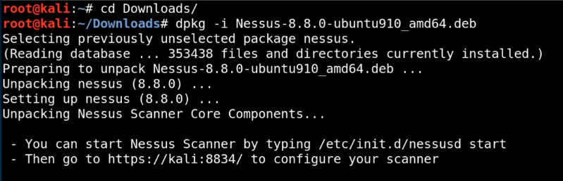

search on google nessus
dawnlod it from Download Nessus | Tenable®
dawnlod ubuntu 64 bit version deb version


go to https://kali:8834/

nessus essential
login
it takes some time to initialize
now we are ready to use nessus
-> start nessus
-> click on new scan

we have many option of scaning
we start with two options
1.basic network scan
2. advanced network scan
-> click on basic scan

general
name : kioptirx
description : kioptrix
folder : default
target : target m/c IP address
schedule: this allow us to schedule our scan on basis of time interval
discovery : we have option
common
all (we select all)
custom
scantype;
default
web vulnerablity
1.known (we select known)
2.quick
3. complex
report : default
advance : default
save and lounch scanning
adavanced network scan : it give some advanced features
general: same as above
discovery: ping the host 1.yes 2.no (choose yourself)
port scaning : 1.TCP 2.UDP 3 .SYN
service discover : default
assment:
1.bruteforce
2.general
3.windows
4. malware
5.web application
credential: if we have credential then we can use them of login

result time
result of basic scan

click on this report : go to settings and disable group

it is listed all vulnerabilty crossponding to their level
ssl

open ssh

also apache is outdated so it is also have multiple vulnerabilty ; ddos xss and module buffer ower flow
we can export nessus file result
NOTE : nessus and burpsuite are most inportant scanner